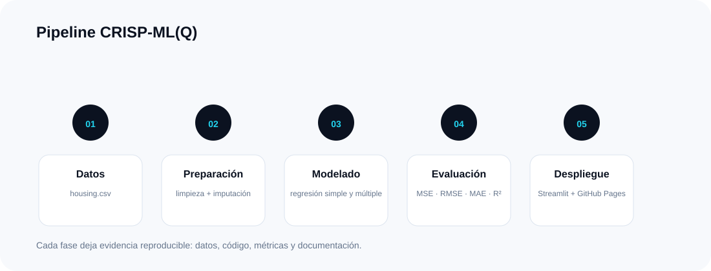
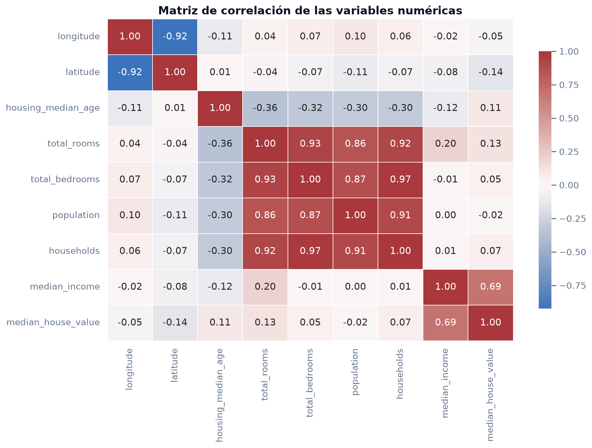
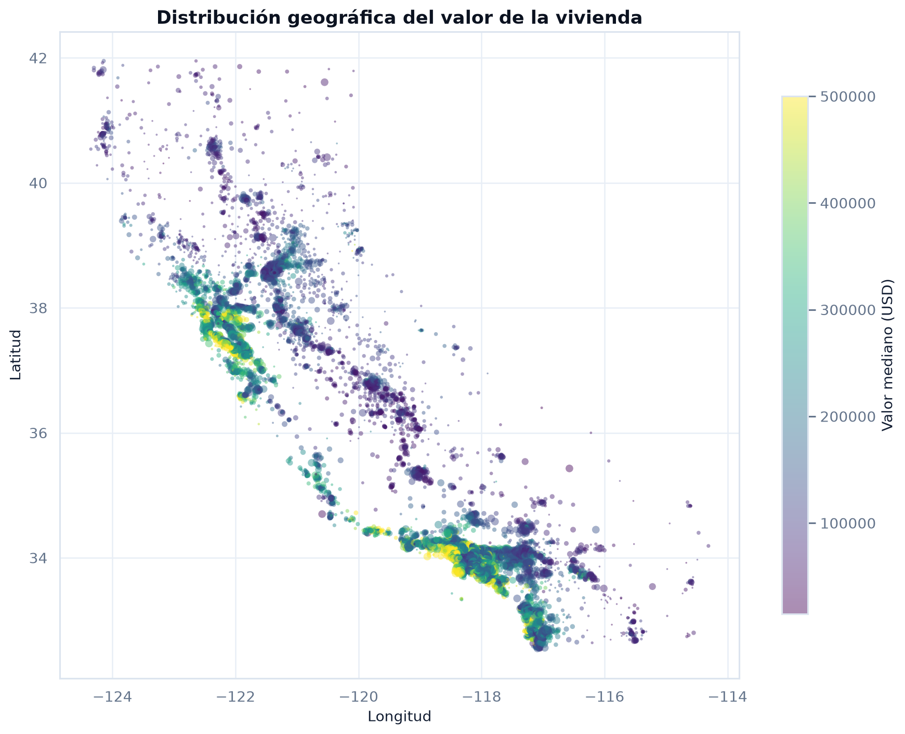
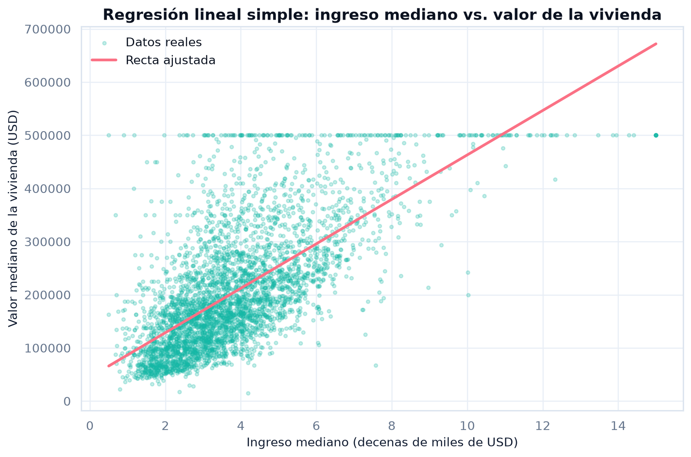
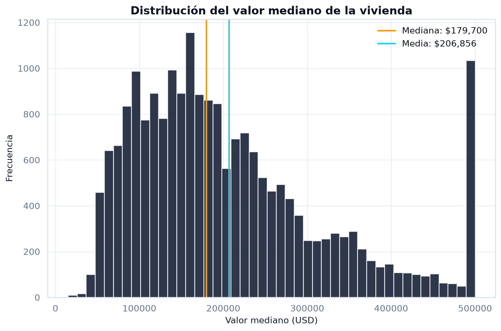

El proyecto conecta una necesidad cotidiana con un flujo completo de Machine Learning, sin ocultar los límites de los datos ni del modelo.
Problema
Estimar el valor de una vivienda
El precio de una vivienda depende de factores físicos, geográficos y socioeconómicos que interactúan entre sí. Estimar ese valor con precisión es difícil para compradores, vendedores, analistas y ciudadanos que no son especialistas en modelos predictivos.
Pregunta de investigación
¿Qué queremos predecir?
¿Cómo predecir el valor mediano de una vivienda en California a partir de variables geográficas, demográficas y socioeconómicas, usando regresión lineal simple y múltiple?
Variable objetivo: median_house_value
Objetivo general
Desarrollar y desplegar un modelo de regresión lineal que estime el valor mediano de una vivienda y lo ponga a disposición mediante una landing page y un simulador interactivo en Streamlit.
Objetivo específico 1
Comprender el problema y el diccionario de variables del dataset California Housing.
Objetivo específico 2
Realizar análisis exploratorio, limpieza e imputación de valores faltantes.
Marco teórico
La regresión lineal, explicada
Un modelo supervisado que aprende una relación lineal y permite interpretar el peso de cada variable.
Regresión simple
La regresión simple usa una sola variable independiente: y = β0 + β1x. En este proyecto se utiliza median_income para estimar median_house_value.
y = β0 + β1x
Regresión múltiple
La regresión múltiple usa varias variables: y = β0 + β1x1 + ... + βnxn. Permite controlar el efecto conjunto de ubicación, edad, tamaño y características socioeconómicas.
y = β0 + β1x1 + … + βnxn
MSE
Error cuadrático medio. Penaliza con fuerza los errores grandes; cuanto más cercano a 0, mejor.
RMSE
Raíz del MSE. Se expresa en la misma unidad que la variable objetivo (dólares).
MAE
Error absoluto medio. Indica cuánto se desvía, en promedio, la predicción del valor real.
R²
Proporción de la variabilidad del precio explicada por el modelo. Un valor de 0.6139 equivale a 61.39%.
Supuestos que conviene revisar
Relación aproximadamente lineal entre las variables.
Independencia de los errores y varianza constante.
Ausencia de multicolinealidad severa entre predictores.
Datos representativos del fenómeno que se quiere predecir.
Dataset
California Housing en detalle
U.S. Census Bureau (1990), distribuido por StatLib y disponible en scikit-learn. 20640 registros, 10 columnas y una variable objetivo continua.
Variable
Tipo
Descripción
Uso
longitude
Numérica continua
Longitud geográfica del bloque de viviendas.
Feature
latitude
Numérica continua
Latitud geográfica del bloque de viviendas.
Feature
housing_median_age
Numérica discreta
Edad mediana de las viviendas del bloque.
Feature
total_rooms
Numérica discreta
Total de habitaciones en el bloque.
Feature
total_bedrooms
Numérica discreta
Total de dormitorios en el bloque. Presenta 207 valores nulos.
Feature
population
Numérica discreta
Población del bloque.
Feature
households
Numérica discreta
Número de hogares en el bloque.
Feature
median_income
Numérica continua
Ingreso mediano de los hogares, expresado en decenas de miles de dólares.
Feature principal
median_house_value
Numérica continua
Valor mediano de la vivienda. Es la variable objetivo. Está acotada en 500,001 dólares.
Target
ocean_proximity
Categórica
Proximidad al océano. Se excluye del modelo lineal para trabajar solo con variables numéricas.
Excluida
Calidad
207 valores nulos en total_bedrooms, imputados con la mediana.
Rango del target
De $14,999 a $500,001. El máximo está censurado.
División
16512 filas de entrenamiento y 4128 de prueba (80/20).
Metodología
Pipeline CRISP-ML(Q)
El proyecto sigue una adaptación de CRISP-ML(Q), un marco de trabajo que incorpora la calidad de los datos y del modelo en cada fase del ciclo de vida.
01
Comprensión del problema
Se define el objetivo, la variable objetivo, las métricas y el alcance académico.
02
Comprensión y preparación de datos
Se carga el CSV, se revisan tipos y nulos, se imputa total_bedrooms y se excluye ocean_proximity.
03
Análisis exploratorio
Se estudian distribuciones, correlaciones, valores atípicos y patrones geográficos.
04
Modelado
Se entrenan regresión simple y múltiple con scikit-learn y una división 80/20.
05
Evaluación
Se comparan MSE, RMSE, MAE y R² sobre el conjunto de prueba.
06
Despliegue y monitoreo
Se publica la landing page y la app Streamlit, dejando documentados los límites y la reproducibilidad.

Arquitectura por capasDatos, preparación, modelado, evaluación y despliegue.
Análisis exploratorio
Qué dicen los datos antes del modelo
El análisis exploratorio permite entender la calidad de los datos, la relación entre variables y los patrones geográficos antes de entrenar el modelo.

Matriz de correlaciónRelaciones lineales entre las variables numéricas del dataset.

Distribución geográficaPrecio mediano por ubicación; el color representa el valor de la vivienda.

Regresión simpleRelación entre el ingreso mediano y el valor mediano de la vivienda.

Distribución del precioHistograma de median_house_value y su concentración en el rango medio.
Hallazgos principales
median_income es la variable con mayor correlación positiva con median_house_value.
La ubicación geográfica explica parte importante del precio: la costa y las áreas metropolitanas concentran valores más altos.
total_bedrooms tiene 207 valores nulos; se imputan con la mediana para no perder registros.
La variable objetivo está acotada en 500,001 dólares, lo que genera un efecto techo en las predicciones.
Existen valores atípicos en total_rooms, population y households que deben interpretarse con cautela.
Ejecución
Del notebook al resultado
Cuatro pasos reproducibles: importar, limpiar, entrenar y evaluar. El notebook limpio contiene el flujo completo.
1. Importar libreríasSe cargan las herramientas de datos, visualización y modelado.
import pandas as pd
import numpy as np
import matplotlib.pyplot as plt
import seaborn as sns
from sklearn.linear_model import LinearRegression
from sklearn.metrics import mean_absolute_error, mean_squared_error, r2_score
from sklearn.model_selection import train_test_split
2. Cargar y limpiarSe lee el CSV, se imputan los nulos de total_bedrooms y se excluye la variable categórica.
El modelo múltiple explica el 61.39% de la variabilidad del precio en el conjunto de prueba. El error sigue siendo relevante para decisiones reales.
MSE$5.06 BError cuadrático medio
RMSE$71,133Raíz del error cuadrático
MAE$51,810Error absoluto medio
R²0.61461.39% de la varianza
Regresión simple
Por cada aumento de una unidad en median_income (10,000 dólares de ingreso mediano), el modelo estima un incremento promedio de 41,793.85 dólares en el valor de la vivienda.
El modelo múltiple explica aproximadamente el 61.39% de la variabilidad del precio en el conjunto de prueba. El error promedio absoluto es de 51,810.48 dólares y el RMSE de 71,133.17 dólares.
El modelo múltiple mejora la capacidad explicativa frente a la regresión simple, pero sigue dejando fuera relaciones no lineales y variables categóricas como ocean_proximity.
Variable
Coeficiente
Lectura
median_income
40538.4
A mayor ingreso mediano, mayor precio esperado.
longitude
-42632.39
El signo refleja el efecto geográfico agregado; no debe interpretarse de forma causal aislada.
latitude
-42450.07
El signo refleja el efecto geográfico agregado; no debe interpretarse de forma causal aislada.
housing_median_age
1182.81
Viviendas más antiguas se asocian, en promedio, con un valor ligeramente mayor en este dataset.
total_rooms
-8.19
Efecto marginal pequeño y sensible a la escala del bloque.
total_bedrooms
116.26
Efecto marginal positivo después de controlar las demás variables.
population
-38.49
Efecto marginal negativo pequeño.
households
46.34
Efecto marginal positivo pequeño.
Limitaciones que debes conocer
La regresión lineal supone relaciones lineales que no siempre se cumplen.
El dataset es agregado por bloque censal y corresponde a 1990; no refleja el mercado actual.
El valor máximo está censurado en 500,001 dólares.
No se incluyen variables categóricas ni interacciones.
Las predicciones son estimaciones académicas, no avalúos profesionales.
Interacción
Simula una predicción
La calculadora rápida usa la regresión simple. El simulador completo, con las ocho variables, está en Streamlit.
Valor estimado de la vivienda
$0
Estimación académica, no avalúo profesional.
Streamlit
Simulador completo en la nube
La app permite ajustar ingreso, edad, habitaciones, dormitorios, población y hogares. También muestra métricas, EDA y la tabla de coeficientes.
Esta simulación es una estimación académica basada en un modelo lineal entrenado con datos de 1990. No constituye un avalúo ni una recomendación financiera.
Documentación
Todo lo que necesitas para reproducirlo
Guías para instalar, ejecutar, desplegar y comprender el proyecto sin ser ingeniero.
El proyecto usa datos públicos agregados y documenta sus límites. No clasifica personas ni comunidades. Las predicciones son de apoyo y requieren supervisión humana.
Una predicción no es una decisión. Un modelo no sustituye el juicio profesional.
Referencias
Fuentes y lecturas
Pace, R. K., & Barry, R. (1997). Sparse spatial autoregressions. Statistics & Probability Letters, 33(3), 291-297.
Pedregosa, F. et al. (2011). Scikit-learn: Machine Learning in Python. Journal of Machine Learning Research, 12, 2825-2830.
scikit-learn Developers. California housing dataset. https://scikit-learn.org/stable/datasets/real_world.html#california-housing-dataset
Studer, S. et al. (2021). Towards CRISP-ML(Q): A Machine Learning Process Model with Quality Assurance Methodology. Machine Learning and Knowledge Extraction, 3(2), 392-413.
McKinney, W. (2010). Data Structures for Statistical Computing in Python. Proceedings of the 9th Python in Science Conference.